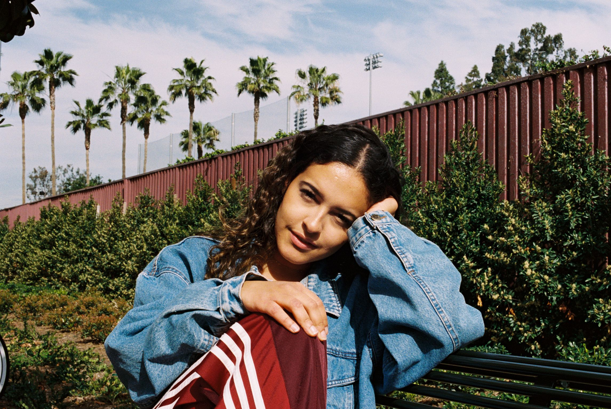
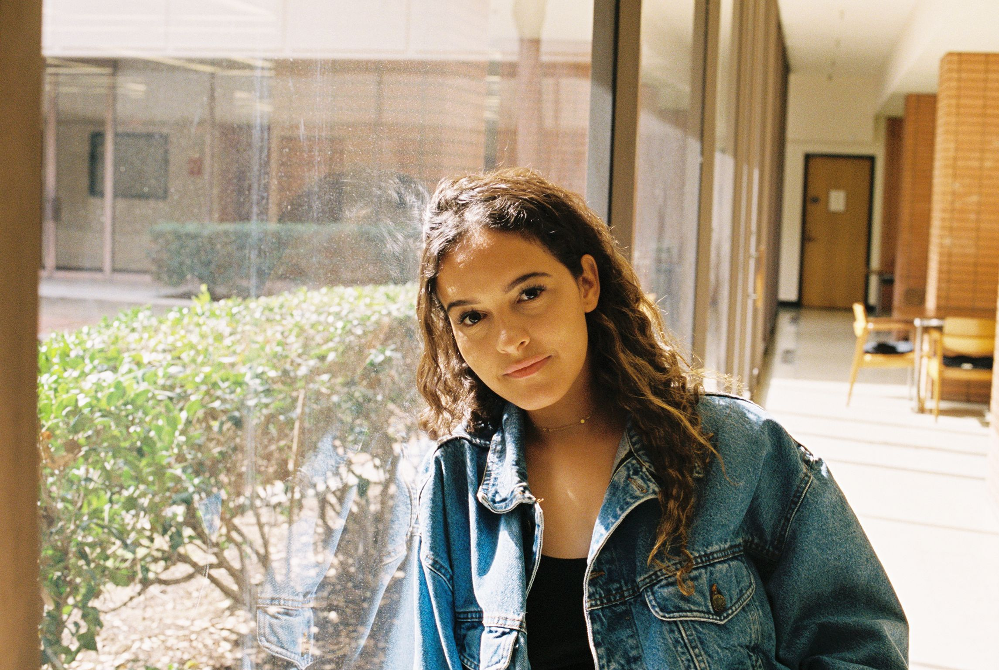
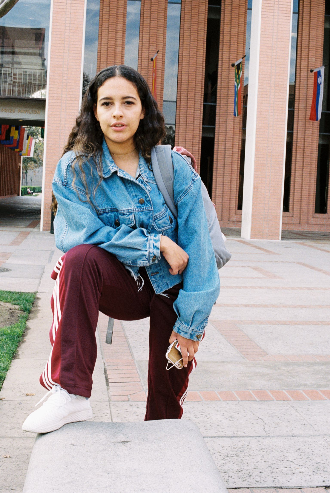
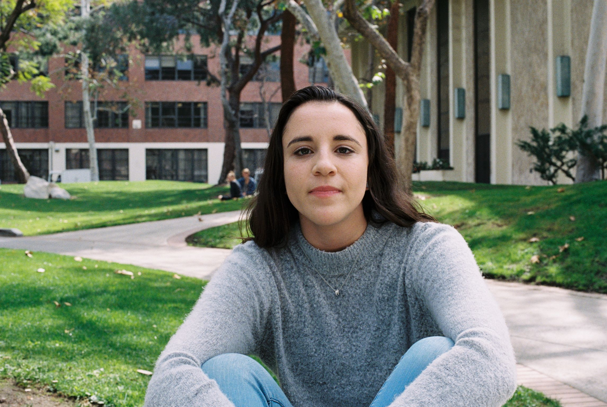
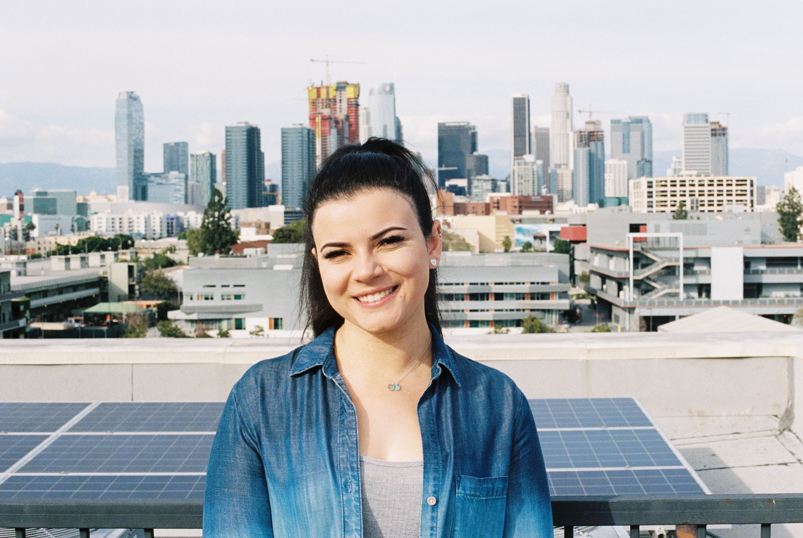
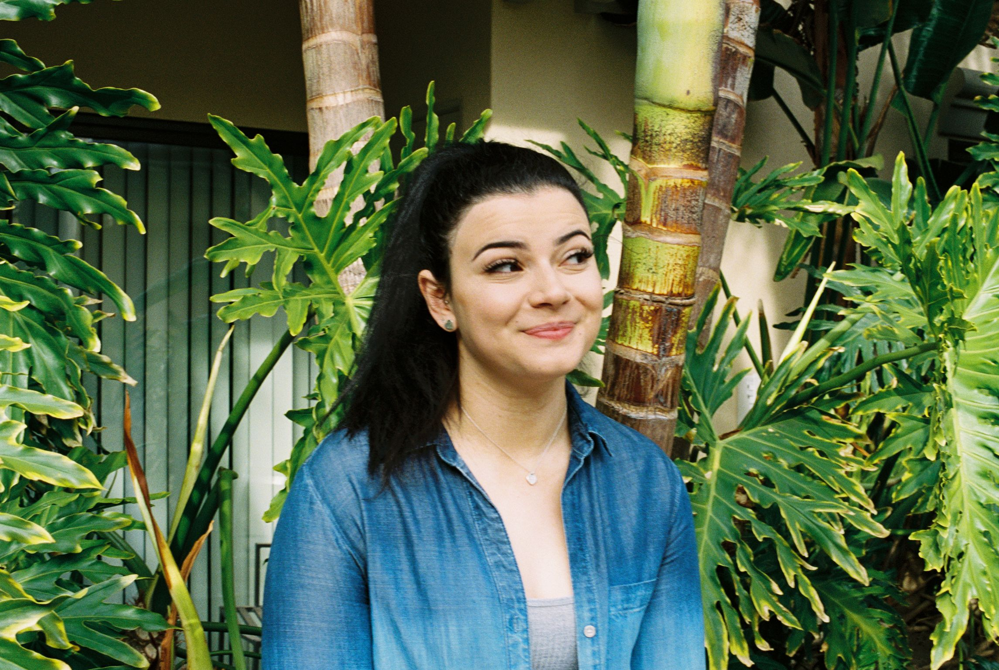
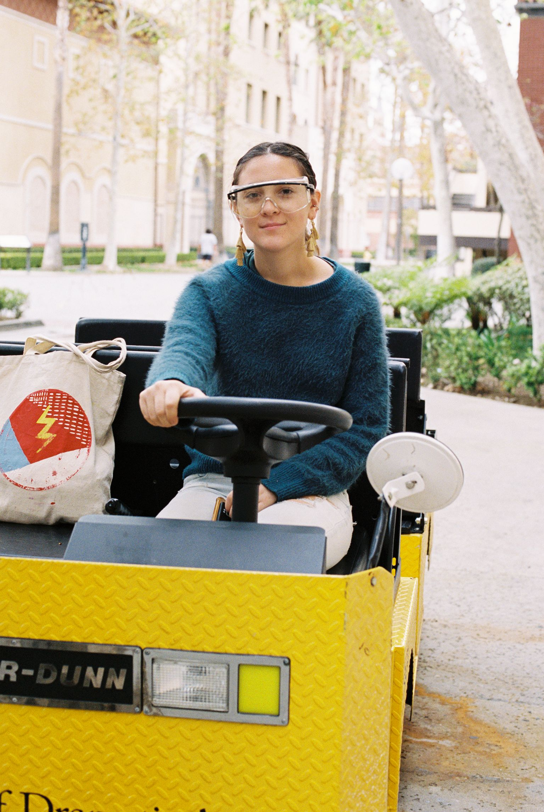
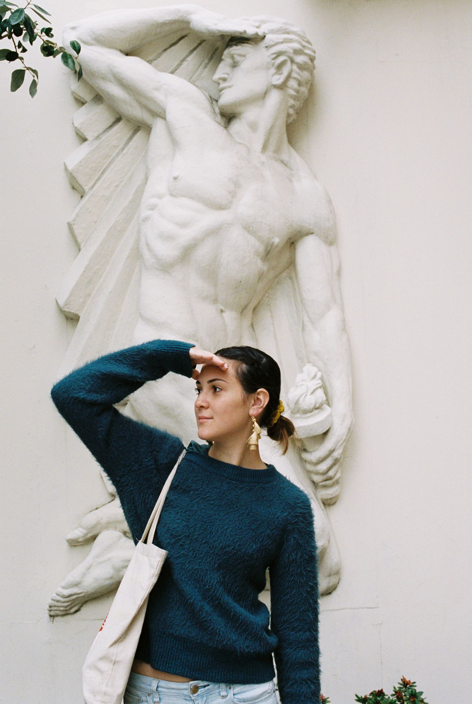
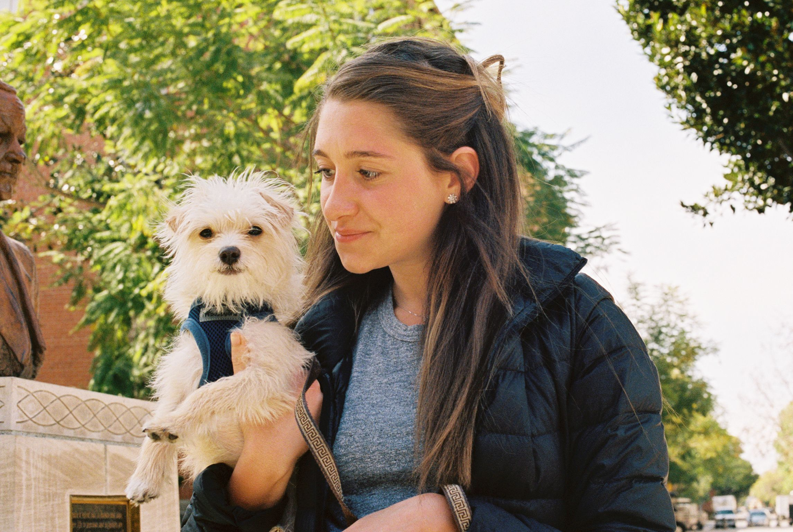

This photo was taken during a project for Nature Design and Media.
I had a lot of trouble coming up with something, and the project was supposed to be collaborative.
At first my ideas were mostly about crowdsourcing, but I decided to do something more meaningful.
I ended up making a magazine about feminism, and I interviewed 5 friends, acquaintances, and strangers who volunteered.
I learned a lot about each of them personally, and about feminism and my role in our society.
It was illuminating and rewarding, and the final product turned out pretty well. -MP








